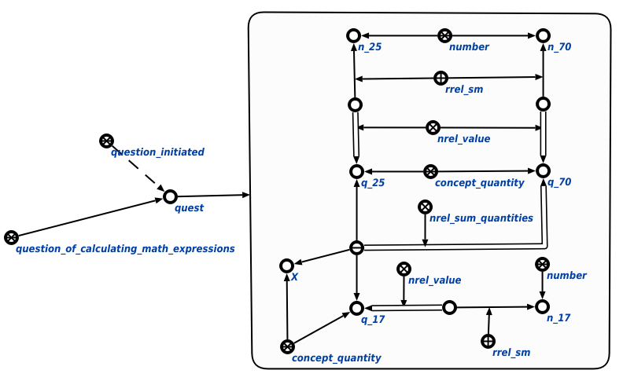

Задачей агента вычисления математических выражений является вычисление математических выражений. Данный агент инициируется при условии появления в памяти вопросной конструкции, соответствующей запросу вычисления математического выражения. Единственным аргументом запроса является математическое выражение, содержащее одну и более связок математических отношений, содержащих неизвестные параметры. Пример вопросной конструкции представлен ниже:
